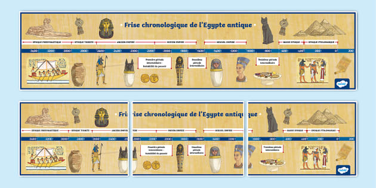

1re dynastie : Les origines du pouvoir pharaonique
Vers 3100 av. J.-C., Narmer unifie la Haute et la Basse-Égypte. C’est le début de la civilisation pharaonique.
Explorez les différentes périodes de l'histoire pharaonique
Vers 3100 av. J.-C., Narmer unifie la Haute et la Basse-Égypte. C’est le début de la civilisation pharaonique.
Cette période voit la consolidation de l'État égyptien et le développement des institutions royales.
Sous Djoser, s’élève la première pyramide à degrés de Saqqarah. Le règne de l’architecte Imhotep marque cette époque.
Khéops, Khéphren et Mykérinos édifient les pyramides de Gizeh, symboles de l’Ancien Empire.
Cette dynastie est marquée par l'importance croissante du culte du dieu Rê et la construction de temples solaires.
Le pouvoir des nomarques s'accroît, annonçant la fin de l'Ancien Empire et une période d'instabilité.
Après l'effondrement de l'Ancien Empire, l'Égypte connaît une période de division avant la réunification sous le Moyen Empire.
Peu documentée, cette dynastie marque le début de la Première Période Intermédiaire, caractérisée par une fragmentation du pouvoir.
Continuation de la 9e dynastie, elle lutte pour le contrôle de l'Égypte contre les princes thébains, marquant la fin de la Première Période Intermédiaire.
Originaire de Thèbes, cette dynastie marque le début du Moyen Empire avec la réunification du pays.
Avec Sésostris III et Amenemhat III, l’État est puissant et organisé. L’art et l’administration sont florissants.
L’Égypte est de nouveau divisée, avec la domination des Hyksôs dans le nord. Cette période se termine par la guerre de libération menée par les pharaons de Thèbes.
Thoutmôsis III, Akhenaton, Néfertiti, Toutankhamon et Ramsès Ier marquent cette période glorieuse du Nouvel Empire.
Ramsès II étend l’influence de l’Égypte. La bataille de Qadesh, les temples d’Abou Simbel, et l’art monumental dominent cette époque.